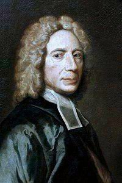
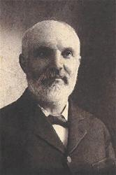

|
|
颂主新歌 |
|
1 Alas! and did my Savior bleed, Refrain: 2 Was it for crimes that I have done, 3 Well might the sun in darkness hide, 4 Thus might I hide my blushing face 5 But drops of tears can ne'er repay United Methodist Hymnal, 1989
|
|
|
https://www.mred365.cn/szxg/7258.html
|
|
|
|
|


颂主新歌 255痛哉！主血倾流 https://youtu.be/qIdSo-8xGnU https://youtu.be/MOjCrT8vkEg - 「赞美诗」——《在十字架歌》（At The Cross (Alas And Did My Saviour Bleed) --
Chinese version）
https://youtu.be/NWZIOw_Kjcc - At the Cross - By Isaac Watts - Performed with Ev. Charles
Odoi
https://youtu.be/Hra0qEJPdyE https://youtu.be/WmXLJGmTLV8 - At The Cross (with lyrics) The most BEAUTIFUL Heavenly hymn
you've EVER heard!
https://youtu.be/nM50LqYTEEA
| Text: | At the Cross |
| Author: | Isaac Watts |
| Author (refrain): | Ralph E. Hudson |
| Tune: | HUDSON |
| Adapter: | Ralph E. Hudson |
| Composer: | John Hill Hewitt |
| Short Name: | Isaac Watts |
| Full Name: | Watts, Isaac, 1674-1748 |
| Birth Year: | 1674 |
| Death Year: | 1748 |
Isaac Watts

was the son of a schoolmaster, and was born in Southampton, July 17, 1674. He is said to have shown remarkable precocity in childhood, beginning the study of Latin, in his fourth year, and writing respectable verses at the age of seven. At the age of sixteen, he went to London to study in the Academy of the Rev. Thomas Rowe, an Independent minister. In 1698, he became assistant minister of the Independent Church, Berry St., London. In 1702, he became pastor. In 1712, he accepted an invitation to visit Sir Thomas Abney, at his residence of Abney Park, and at Sir Thomas' pressing request, made it his home for the remainder of his life. It was a residence most favourable for his health, and for the prosecution of his literary labours. He did not retire from ministerial duties, but preached as often as his delicate health would permit.
The number of Watts' publications is very large. His collected works, first published in 1720, embrace sermons, treatises, poems and hymns. His "Horae Lyricae" was published in December, 1705. His "Hymns" appeared in July, 1707. The first hymn he is said to have composed for religious worship, is "Behold the glories of the Lamb," written at the age of twenty. It is as a writer of psalms and hymns that he is everywhere known. Some of his hymns were written to be sung after his sermons, giving expression to the meaning of the text upon which he had preached. Montgomery calls Watts "the greatest name among hymn-writers," and the honour can hardly be disputed. His published hymns number more than eight hundred.
Watts died November 25, 1748, and was buried at Bunhill Fields. A monumental statue was erected in Southampton, his native place, and there is also a monument to his memory in the South Choir of Westminster Abbey. "Happy," says the great contemporary champion of Anglican orthodoxy, "will be that reader whose mind is disposed, by his verses or his prose, to imitate him in all but his non-conformity, to copy his benevolence to men, and his reverence to God." ("Memorials of Westminster Abbey," p. 325.)
--Annotations of the Hymnal, Charles Hutchins, M.A., 1872.
Notes
Scripture References:
st. 2 = Mark 15:34
st. 3 = Mark 15:33
Written by Isaac Watts (PHH 155) in six stanzas, this text was published in Watts' Hymns and Spiritual Songs in 1707. The final line in stanza 1 originally read, "for such a worm as I."
Watts' original heading for the text, "Godly sorrow arising from the suffering of Christ," fits stanzas 1-3 well. Stanza 3 contains the profound paradox of God the creator dying for the sin of human creatures: "Christ, the mighty Maker, died for his own creatures' sin." Stanza 4 moves from penitent sorrow to gratitude and tears of joy.
Liturgical Use:
Holy Week; with sermons on atonement and redemption.
--Psalter Hymnal Handbook, 1987
=================================
Alas! and did
my Saviour bleed. I. Watts. [Passiontide.] First
published in the first edition of his Hymns and
Spiritual Songs, 1707, and again in the enlarged edition of the
same 1709, Bk. ii., No. 9,in 6 stanzas of 4 lines, and entitled "Godly
sorrow arising from the Sufferings of Christ." At a very early date it
passed into common use outside of the religious body with which Watts
was associated. It is found in many modern collections in Great Britain,
but its most extensive use is in America. Usually the second stanza,
marked in the original to be left out in singing if desired, is omitted,
both in the early and modern collections.
A slightly altered version of this hymn, with the omission of stanza
ii., was rendered into Latin by the Rev. R. Bingham, as "Anne fundens
sanguinem," was included in his Hymnologia Christiana
Latina, 1871, pp. 245-247.
--John Julian, Dictionary of Hymnology (1907)
The first two stanzas of this hymn address the same paradox that Paul wrote about in Romans: “For one will scarcely die for a righteous person—though perhaps for a good person one would dare even to die— but God shows his love for us in that while we were still sinners, Christ died for us.” (Romans 5:7-8 ESV) Isaac Watts shows the contrast very powerfully:
“When Christ, the mighty Maker, died
For man, the creature's sin.”
The only appropriate response to the realization that such selfless sacrifice on the part of a perfect God was for the sake of the imperfect, selfish creatures we know ourselves to be is total surrender. We know we can never repay our debt of gratitude, so we sing:
“Here, Lord, I give myself away;
'Tis all that I can do.”
Text:
This hymn is one of Isaac Watts's best known texts, and was first published in Watts's Hymns and Spiritual Songs as “Godly Sorrow arising from the Sufferings of Christ” in 1707. Ralph Hudson added a refrain in the nineteenth century, and this version is often listed under the title “At the Cross,” after the first line of the refrain. Of the six original stanzas, the second (which begins “Thy body slain, sweet Jesus, thine”) is usually omitted. Of the five stanzas in common use, the fourth (beginning “Thus might I hide my blushing face”) is the most frequently omitted. The first, second, and third are always sung, and the fifth is frequently sung.
In the third stanza, Watts originally wrote “When God, the mighty Maker, died / For man, the creature's sin.” (The Psalms and Hymns of Isaac Watts, #II.9) “God” is often changed to “Christ” to avoid literally stating that God is dead (Carlton R. Young, Companion to the United Methodist Hymnal, p. 188). In the next line, “man” is not gender-inclusive, so the line is often rendered “for his own creature's sin.” While this does solve the problem of inclusivity, it somewhat weakens the contrast between God and humanity in Watts's powerful metaphor.
Tune:
There are two common tunes – MARTYRDOM (also called AVON) and HUDSON. It is fairly common for a hymnal to contain both versions of the song. The setting to HUDSON is often titled “At the Cross,” after the first line of the refrain, though sometimes both settings are given the title of the first line of the hymn.
The tune MARTYRDOM was originally a Scottish folk tune. The title may come from a Scottish village, Fenwick, which is also the last name of a Scottish Covenantor martyr, James Fenwick. Hugh Wilson, who first adapted the folk tune as a duple-meter hymn, lived in Fenwick. However, the version of the tune that is usually sung is in triple meter, by Robert Smith, a Presbyterian music minister who worked in Edinburgh.
HUDSON is named after its composer, Ralph E. Hudson. It was first published in 1885 in Hudson's Songs of Peace, Love and Joy. William J. Reynolds has argued that the text and tune of the refrain were part of the camp meeting tradition, and were merely added on by Hudson. He cites two instances printed in 1887, after HUDSON was first published, where the refrain appeared separately and was not attributed to Hudson (Companion to the Baptist Hymnal, p. 28-29). Though the absence of an example published before 1885 somewhat weakens this argument, the contrasting musical character of the stanza and refrain melodies, and the differing themes of Watts's stanzas and the refrain text support the idea of separate composition.
When/Why/How:
This hymn is usually sung during Lent and Holy Week. Because of the refrain text, “At the Cross” is also associated with the theme of personal redemption.
The two contrasting tunes associated with this text present a wide range of possibility for using this hymn in worship. In addition to MARTYRDOM and HUDSON, there is a contemporary setting of Watts's text with an original refrain by Bob Kauflin. Victor Johnson has also written a choral setting of this text to original music titled "Love Beyond Degree". Billy Madison has set "At the Cross" for violin and piano, trading the melody between the two instruments. This arrangement is also available for other solo instruments, including flute and trumpet. Anna Laura Page's piano arrangement of MARTYRDOM is part of her collection "Tell the Story". "Beneath the Cross of Jesus," "At the Cross," and "When I Survey the Wondrous Cross" are the three hymns in the orchestral medley "The Cross" by Lloyd Larson and Brant Adams.
Tiffany Shomsky,
Hymnary.org
Tune Information
| Title: | HUDSON (Hudson) |
| Composer: | R. E. Hudson |
| Meter: | 8.6.8.6 D |
| Incipit: | 13213 54356 54321 |
| Key: | E♭ Major |
| Copyright: | Public Domain |
| Short Name: | R. E. Hudson |
| Full Name: | Hudson, R. E. (Ralph E.), 1842-1901 |
| Birth Year: | 1843 |
| Death Year: | 1901 |
Ralph Hudson (1843-1901)

was born in Napoleon, OH. He served in the Union Army in the Civil War. After teaching for five years at Mt. Union College in Alliance he established his own publishing company in that city. He was a strong prohibitionist and published The Temperance Songster in 1886. He compiled several other collections and supplied tunes for gospel songs, among them Clara Tear Williams' "All my life long I had panted" (Satisfied). See 101 More Hymn Stories, K. Osbeck, Grand Rapids, MI: Kregel Publications, 1985).
Mary Louise VanDyke
Words: Isaac Watts (b. July 17, 1674; d. Nov, 25, 1748);
refrain by Ralph Erskine Hudson (b. July 12, 1843; d. June 14, 1901)
Music: Hudson, by Ralph Erskine Hudson
Links:
Wordwise Hymns
The Cyber
Hymnal
Hymnary.org
Note: This gospel song is a kind of hybrid adaptation of the great hymn Alas, and Did My Saviour Bleed, by Isaac Watts. As I comment in the Wordwise Hymns link, Hudson should have left well enough alone. He has totally missed the mood of the original. Congregations may love to sing Hudson’s jolly tune, but it does not complement the heart-rending grief Watts depicts of the one standing before the cross.
Hymnary.org makes reference to the Hudson version, but seems only to have the original posted. If you want to see what that looked like all the way back to 1766, they have it.
CH-1) Alas! and did my Savior bleed
And did my Sovereign die?
Would He devote that sacred head
For such a worm as I?
At the cross, at the cross where I first saw the light,
And the burden of my heart rolled away,
It was there by faith I received my sight,
And now I am happy all the day!
In 1940, the Glenn Miller Orchestra recorded a rousing number called In the Mood, and that phrase came to mind as I started working on this article. It’s what we sometimes say, when we either feel like doing something–or don’t. (“I’m in the mood for a chocolate sundae.” Or, “I’m not in the mood to watch a funny movie.”)
The subject relates to the music of the church as well. Sacred music puts lines of poetry into a musical setting. The most important of the two is the text, which carries the primary message–one would hope it’s a message in tune with the Word of God. The job of the music is to convey the message of the text, enhancing it, or increasing its impact.
If the music is to do that, it has to be “in the mood.” It ought to complement what the words are saying, not conflict with them. Words expressing joy and excitement aren’t enhanced by a slow, sober tune. Nor does the opposite work well. Sombre, serious, meditative words may seem to clash with a bouncy, happy melody. The speed at which songs are sung, and sometimes the style of the accompaniment, are factors too.
These concerns relate to this song published in 1885. Hudson liked to take traditional hymns and turn them into gospel songs, giving them a peppy tune and adding a refrain. Sometimes it worked. But not necessarily every time. Yes, congregational hymns need to be singable and memorable. But we also need to consider whether the frame of the picture (the music) is suitable for the picture (the words). Hudson sometimes forgot that.
The most painful example of what he did that comes to mind is this one. With eloquent passion, Watts pictures himself standing before the cross, wondering, in both love and anguish, at the love that led Christ to die for “a worm” such as he was. The opening word sets the tone. “Alas” is an expression of sorrow, grief, and wretchedness. Watts writes:
CH-3) Was it for crimes that I had done
He groaned upon the tree?
Amazing pity! grace unknown!
And love beyond degree!
CH-4) Well might the sun in darkness hide
And shut his glories in,
When Christ, the mighty Maker died,
For man the creature’s sin.
When the traditional tune (called Martyrdom) is used, this becomes a worshipful meditation on the reason for Christ’s terrible agony on the cross (cf. Matt. 27:27-31, 45-46), and grief at the thought that our sin put Him there. But Ralph Hudson felt the hymn needed more zip. He gave it a new tune, with a jolly, rhythmic chorus.
Some congregations may enjoy singing Hudson’s creation, but I personally believe it does grave injustice to the song’s purpose! It minimizes our confrontation with the horrific nature of crucifixion, requiring, as it does, an almost impossible 180-degree emotional turn each time singers move from the refrain to the next stanza. And the text of the chorus isn’t even biblical, at that! Even the Lord Jesus wasn’t “happy all the day!”
As the Bible says, in another context, “If the trumpet makes an uncertain sound, who will prepare for battle” (I Cor. 14:8). Is the music of our congregational songs “in the mood”? It’s a valid question for every pastor and service leader.
CH-5) Thus might I hide my blushing face
While His dear cross appears,
Dissolve my heart in thankfulness,
And melt my eyes to tears.
CH-6) But drops of grief can ne’er repay
The debt of love I owe:
Here, Lord, I give my self away
’Tis all that I can do.
Questions:
1) Would you make use of Hudson’s version in your church, rendered as an
upbeat happy song?
2) What other hymns express more appropriately the joy of our salvation?
At The Cross (Alas, And Did My Savior Bleed)
"At the Cross", also known by its first line "Alas, and did my
Savior bleed", is a Christian hymn written by Issac Watts in the 18th century
that harkens to the atonement of our sins by Christ on the cross at Calvary.
Read the lyrics of this popular hymn and the background story of Watts. Also,
watch amazing performances of this powerful tune in the collection below.
Alas! and did my Savior bleed
And did my Sovereign die?
Would He devote that sacred head
For sinners such as I?
Refrain:
At the cross, at the cross where I first saw the light,
And the burden of my heart rolled away,
It was there by faith I received my sight,
And now I am happy all the day!
Thy body slain, sweet Jesus, Thine—
And bathed in its own blood—
While the firm mark of wrath divine,
His Soul in anguish stood.
Was it for crimes that I had done
He groaned upon the tree?
Amazing pity! grace unknown!
And love beyond degree!
Well might the sun in darkness hide
And shut his glories in,
When Christ, the mighty Maker died,
For man the creature’s sin.
Thus might I hide my blushing face
While His dear cross appears,
Dissolve my heart in thankfulness,
And melt my eyes to tears.
But drops of grief can ne’er repay
The debt of love I owe:
Here, Lord, I give my self away
’Tis all that I can do.
Words: Isaac Watts (1707)
Songwriters
Issac Watts (1707)
Published by
Public Domain
The Story Behind At The Cross (Alas, and did my Savior bleed)
Isaac Watts, born July 17, 1674, and died November 25, 1748, was an English
Christian minister of the Congregational church, hymn writer, theologian, and
logician. He was a productive and popular hymn writer and is credited with
roughly 750 hymns. He is recognized as the "Godfather of English Hymnody"; many
of his hymns remain in use today and have been translated into numerous
languages.
Watts led a change in hymnal style by including new poetry for "original songs
of Christian experience" to be used in worship. The older tradition was based on
the poetry of the Bible: the Psalms.
Watts also introduced a new way of using the Psalms in verse for church
services, suggesting that they be adapted for hymns with a specifically
Christian perspective. As Watts put it in the title of his 1719 metrical
Psalter, the Psalms should be "imitated in the language of the New Testament."
https://www.godtube.com/popular-hymns/at-the-cross-alas-and-did-my-savior-bleed-/